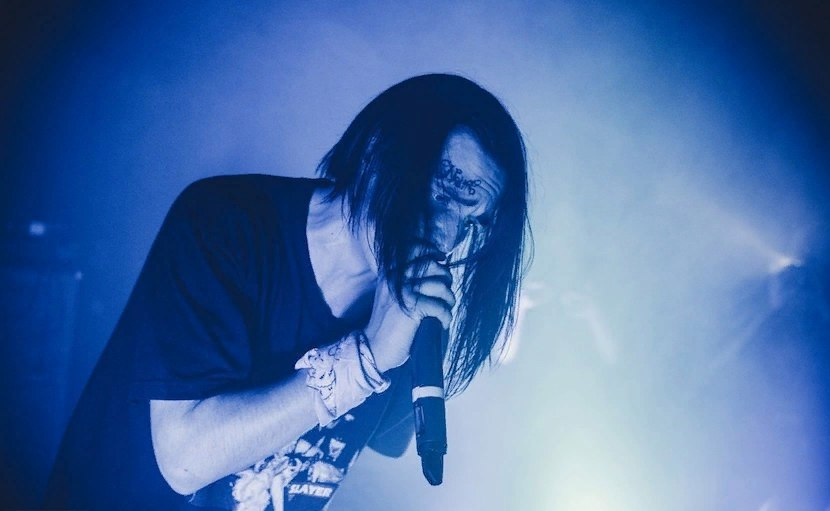

ЭЛЬДАР ДЖАРАХОВ

Джарахова сложно спутать с любым другим человеком, потому как у него есть особые отличительные черты: он совсем невысокого роста, у него низкий голос, он ходит в модных очках с широкой оправой, а еще он иногда делает себе эпатажные и экстравагантные прически. Многие его подписчики не знают, какой возраст у Эльдара Джарахова. И это совсем неудивительно, ведь его внешность настолько необычна и обманчива, что можно предположить, что ему в пределах от пятнадцати до тридцати. Вместе с этим парень достаточно самоироничный и легко может «переварить» любую шутку в свой адрес. В 2010 году он создает рэп-проект «Успешная группа» на видеохостинге YouTube. В его репертуар они включали музыкальные композиции и шуточные зарисовки, в частности, «Я подарю тебе весь этот мир», «Если не стоит». Радовали и продолжают радовать растущую армию фанатов ютубера многие креативные проекты «КликКлакБэнда», как стала называть себя их команда. Это – «Шокирующее караоке», «Разрушители экспериментов», «Дай леща» (в ходе последнего два участника старались друг друга рассмешить, а кто не выдерживал и смеялся, заслуживал от соперника затрещины). Видеоблогер продолжает творить и участвовать в креативных проектах. В 2017-м Сети был опубликован ролик блогера «Блокеры», где он прошелся по известным фразам таких знаменитостей, как Оксимирон, Баста, Скриптонит, Фараон. После взаимных диссов он отправил свою «Валентинку» Диме Ларину. Затем они схлестнулись в рэп-поединке на Versus. Эльдар, сумевший приятно удивить публику своими яркими рифмами и напомнивший противнику, что тот на своем прошлом баттле не смог одолеть даже «шепелявого алкаша» Юрия Хованского, был признан победителем.
FACE
Иван без зазрения совести рассказывает о том, что он может легко наброситься на человека с кулаками, если ему что-то не нравится. У FACE нет высшего образования. Конечно, это его выбор, ведь сейчас он на хайпе, и у него просто нет лишнего времени. Он открыто заявляет, что не считает нужным его получать. Рэпер никогда не планирует свою жизнь, все получается спонтанно: «Я вообще ненавижу ничего планировать и считаю, что такая жизнь для стариков. Я люблю трэш и неуловимость момента». Забавно так же то, что он тут же сказал, что планирует жениться на Марьяне Ро.
В сентябре 2017 года Face выпустил альбом «No Love» с 9 треками. Половина альбома выполнена в традиционном для артиста дерзком стиле, а остальные песни удивили поклонников своей лиричностью. Более 27 000 пользователей сети Вконтакте сделали репост с новостью об альбоме – так Иван побил рекорд группы «Грибы» с их проектом «Дом на колёсах, ч.1».
Вскоре Дрёмин поучаствовал в шоу Сергея Дружко в рубрике «Биржа Мемов» от Льва Шагиняна, стал гостем шоу «Comedy Club», а затем дал развернутое интервью журналисту Юрию Дудю.
